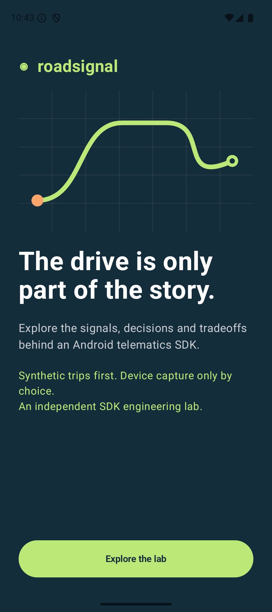
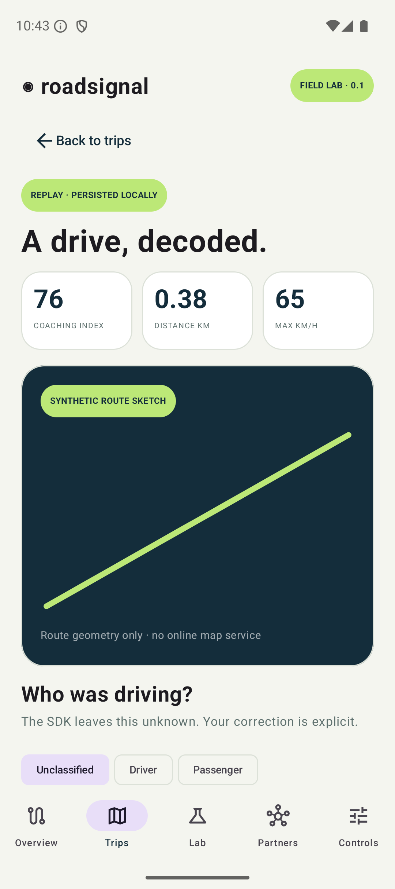
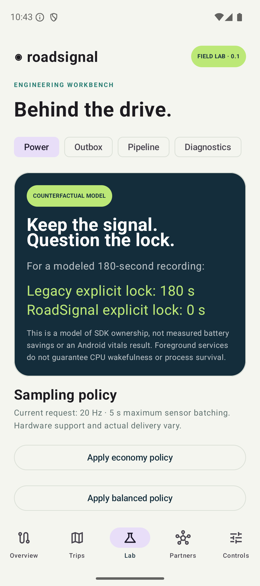
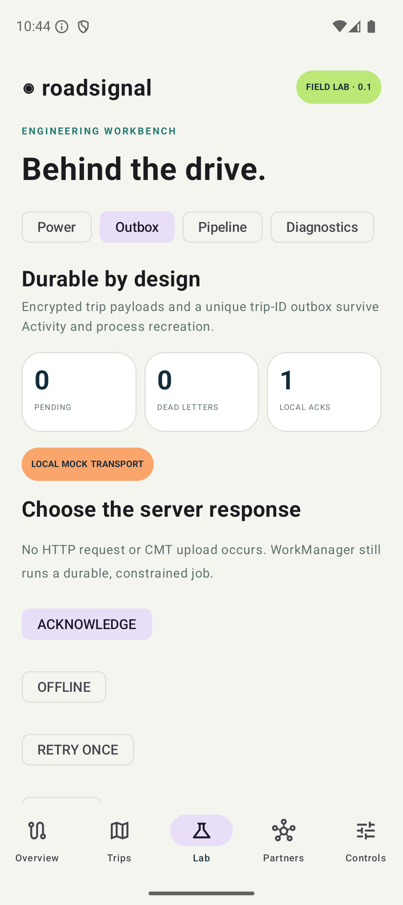
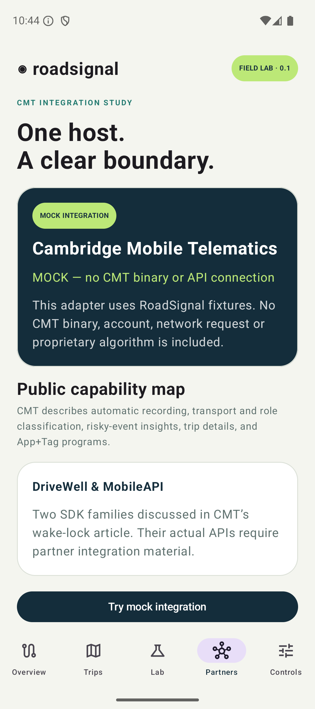
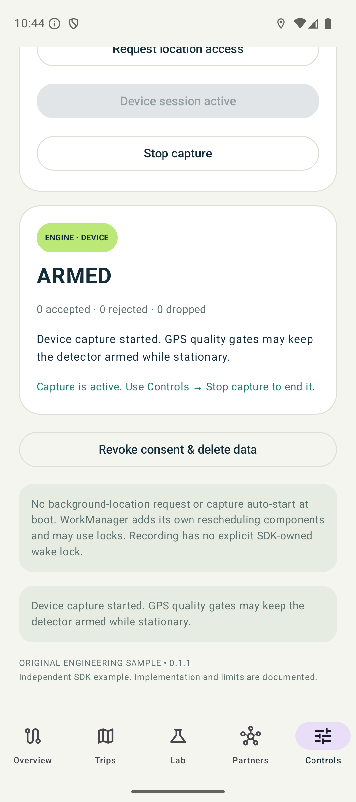

Understand the drive.
Own the engineering.
A technical guide to an Android telematics SDK example, its Compose host, and the distribution pipeline. Canonical Markdown, native screenshots, source and executable checks are in GitHub.
Independent SDK explorationCMT integration is a labeled mock. Replay is synthetic, power comparisons are modeled, and no emergency response or real upload occurs. Mermaid diagrams below are preserved as source; GitHub renders their canonical Markdown versions.






Getting started with RoadSignal Lab
RoadSignal Lab explores the contracts between an Android SDK and its host application: capture, consent, durable work, state observation and artifact distribution.
Build and run
Open the project in Android Studio with JDK 21 for Gradle. Install Android SDK platform 36 and run sample-app on Android 8+ (API 26+).
./gradlew :sample-app:assembleDebug
Choose Explore the lab → Controls → Enable local SDK → Overview → Replay commute. Replay needs no account, API key, network endpoint or location permission. Open Trips to inspect the persisted route, events and driver/passenger correction. Device capture is a separate explicit action with runtime permission handling.
Explore the implementation
| Area | Entry points |
|---|---|
| Trip state machine | TripEngine.accept and core reducer tests |
| SDK ownership | RoadSignal.get, startReplay, startLiveFromVisibleActivity |
| Android capture | CaptureService and DeviceCapture |
| Durability and privacy | TripStore.save, revokeAndDelete, sync |
| Deferred work | UploadWorker.doWork |
| Host integration | LabViewModel, lifecycle-aware state collection, JavaRoadSignalClient |
| Artifact integration | distribution-consumer, publication and verification scripts |
Follow a sample's timestamp, thread, collection generation, consent epoch and storage boundary. Finalized trips are durable; an active partial trip is not checkpointed. The Partners screen uses an original mock adapter and explicitly reports unavailable real-vendor setup.
Reproduce the journeys
USER_JOURNEYS.md describes all 16 flows. SCREENSHOT_GALLERY.md shows native captures. Lab contains Power, Outbox, Pipeline and Diagnostics views. Controls exposes consent, device start/stop and local deletion.
Verify and distribute
scripts/verify.sh
scripts/distribute.sh
# Disposable emulator only; this resets the lab fixture data:
scripts/instrumented.sh
See architecture, SDK API contracts, distribution, and verification. The research ledger links primary sources. Implementation status distinguishes implemented behavior, mocks and production gaps.
What this project actually does
This is an original educational SDK, not a port, implementation, licensed distribution or performance equivalent of CMT DriveWell/MobileAPI. The public API is version 0.1.1 and remains a prototype. Review the implementation and verification evidence for the supported behavior and remaining work.
| Capability | Status | Practical boundary |
|---|---|---|
| Kotlin/Compose host with multiple journeys | Implemented | Synthetic data is the default |
| Independent pure JVM SDK engine | Implemented | Rule-based thresholds, not ML |
| Automatic trip start/stop inside an armed stream | Implemented | Three valid moving fixes and stationary dwell; no always-on discovery |
| GPS/location + linear acceleration + gyroscope | Implemented | User-started location foreground service; registration and batching requests, not guaranteed sensor delivery |
| Live permission/foreground-service handling | Implemented | Start from visible host UI; approximate/poor data may not meet quality gates |
| Sensor gap, bad fix, ordering and finite-value gates | Implemented | Conservative segmentation; distance during missing data is omitted |
| Braking/acceleration events, impact candidate | Implemented heuristics | No validated safety, insurance-risk or emergency inference |
| Driver/passenger classification | User correction | No automatic classifier; label is local |
| Phone handling | Explicit replay fixture only | No real distraction inference or phone-content access |
| Encrypted durable trip payloads | Implemented | AES-GCM/Android Keystore; metadata plaintext; finalized trips only |
| Local outbox, retries, permanent failure, receipts | Implemented | Mock server responses; no HTTP upload |
| WorkManager scheduling | Implemented | Connected-network constraint + exponential backoff; system scheduling is not immediate |
| Local capture policy with revision and TTL | Implemented | Local fixture; no deployed remote transport, signature or targeting service |
| No explicit SDK-owned partial wake lock | Implemented | Not a measured battery improvement; dependencies/platform may acquire their own locks |
| CMT integration | Mock + unavailable vendor adapter | No sanctioned artifact/API guide was verified; partner setup required |
| Core ABI + Android/bridge public descriptor checks | Implemented | Baselines are review gates; behavior compatibility still needs tests |
| Project-local Maven publishing + external consumer | Implemented | POM/AAR/JAR/module metadata and source artifacts, no commercial registry |
| Pinned GitHub Actions CI and tag attestation job | Configured | API 31/35/36, release upload and two-subject provenance; current-source results are tracked in verification evidence; no SLSA level claim |
| Long-lived recording/process-death continuation | Not implemented | Partial active trip can be lost; no silent restart |
| Always-on low-power discovery, activity recognition, BLE Tag | Design only | Permission, policy, hardware and field-validation work remains |
| Authentication, cloud scoring, crash response, remote config service | Not implemented | No tokens, backend account or external telemetry |
Deliberate prototype limits
The SDK uses one process, one application-scoped instance and one collection at a time. Starting a new replay/device session stops the old one. It retains at most 50 trip summaries, 500 route points and 200 events per trip, plus a 64-element device sample queue. Route points after the cap are omitted rather than sampled; production would need a reviewed decimation policy. Gyroscope peaks are diagnostics, not a driver-behavior classifier. Sensor peaks and location speed are not synchronized sensor fusion.
The outbox stores unique finalized-trip IDs. Acknowledgments are local receipt rows, not a server-side exactly-once protocol. Role corrections are persisted locally and do not enqueue a new revision after acknowledgment. Retries have a finite attempt budget; dead-letter recovery is explicit. Real backend implementation requires payload revisions, authentication, authorization, idempotency at the server, timeout/rate-limit handling, consent-aware cancellation and contract tests.
There is no 99% battery claim. The workbench compares a hypothetical 180-second explicit lock with an explicit-lock-free design. It cannot infer battery consumption, wakelock-vitals session rate, capture completeness, or CMT's production results.
Architecture and execution model
Boundaries
flowchart TB
App[Compose host / ViewModel] --> SDK[RoadSignal facade]
App --> Bridge[CMT mock integration port]
Bridge --> SDK
SDK --> Core[Pure JVM TripEngine]
SDK --> Store[SQLite transaction + encrypted payloads]
SDK --> Service[User-started location FGS]
Service --> Sensors[Location + linear acceleration + gyro]
Sensors --> Queue[Bounded generation-tagged channel]
Queue --> SDK
Store --> Worker[WorkManager / local mock transport]
SDK --> Flow[StateFlow snapshot]
Flow --> App
telematics-core has no Android, coroutine, location-service or network dependencies. It accepts copied immutable samples and produces deterministic state transitions and finalized summaries. telematics-sdk owns execution and resources. The host owns presentation, permission prompts and visible user choices. cmt-bridge is a replaceable partner boundary. Distribution consumers receive core transitively via the AAR's published API dependency.
State and timing
stateDiagram-v2
[*] --> STOPPED
STOPPED --> ARMED: explicit start after consent
ARMED --> CANDIDATE: valid moving fix
CANDIDATE --> ARMED: evidence falls below threshold
CANDIDATE --> RECORDING: three consecutive moving fixes
RECORDING --> SETTLING: speed below stop threshold
SETTLING --> RECORDING: movement resumes
SETTLING --> ARMED: stationary dwell finalizes trip
RECORDING --> ARMED: long gap finalizes prior segment
ARMED --> STOPPED: stop / revoke / policy disable
RECORDING --> STOPPED: stop / revoke / policy disable
Samples use elapsed milliseconds derived from Location.elapsedRealtimeNanos or synthetic replay time; sensor callbacks use the corresponding elapsed clock. Wall-clock changes cannot alter trip duration or acceleration calculations. Trip confirmation deliberately starts at the confirmation fix, not the first candidate, so pre-confirmation distance is omitted. A long gap closes the previous trip at the last accepted fix. No distance is invented across the gap. Stationary dwell tolerates traffic lights; it is not a production-trained transport classifier.
Policies are validated against revision and absolute TTL at application. The Android facade converts remaining policy TTL to an elapsed-time deadline and schedules one expiry action for an active collection; later wall-clock adjustments cannot extend an active policy. Configuration is not persisted, remotely authenticated or targeted. A production control plane needs signed payloads, capability/version gating, a last-known-good strategy, persisted expiry semantics and audited targeting.
Concurrency and ownership
The application-scoped facade retains only application context. Public suspending mutations move disk/crypto work onto Dispatchers.IO, then acquire a single-writer Mutex. The engine is never accessed concurrently. The scope uses a supervisor and bounded error reporting. StateFlow gives consumers the latest state; it is not an event-delivery guarantee or durable event bus.
Hardware callbacks run on one owned HandlerThread. They copy values, aggregate bounded linear/gyro peaks and offer location-timestamped samples into a 64-element channel. Overflow increments a counter instead of allocating unbounded work. A collection-generation tag fences callbacks left over from a stopped/replaced capture. Consent has a separate durable epoch: an asynchronous producer cannot save a trip after revocation under the old epoch. Those are different lifetimes and require different guards.
The service is non-exported, started by visible host UI, uses the location FGS type and posts a Stop notification. It is not sticky, stops with the task, and does not start at boot. Listener registrations and the handler thread are released on stop/destruction. A process death does not auto-resume capture. Availability is a product contract, not a reason to silently bypass platform rules.
Persistence and recovery
Finalizing a trip inserts its encrypted summary and outbox ID in one SQLite transaction. Schema v2 adds a capture-wall-time column; an instrumented v1 fixture verifies a non-destructive migration. Payload schema v1 is independent of database schema and SDK SemVer. Unsupported migrations fail; the SDK does not delete and recreate user data.
AES-GCM encrypts payload columns with an Android Keystore key. Primary IDs, sequence numbers, timestamps, consent state, retry state and counts remain SQLite metadata. It is not whole-database encryption. The store surfaces unreadable ciphertext records rather than rendering plaintext or claiming successful recovery.
Only finalized trips are durable. The current engine does not checkpoint an active partial trip. The cold-process test checks that finalized journal/outbox state reloads and capture remains stopped. Production crash recovery would need encrypted segment checkpoints, restart reconciliation and a reviewed policy for incomplete trips.
Extension seams
- Replace the mock transport behind an explicit authenticated upload contract, with payload revisions and server idempotency.
- Implement a licensed CMT adapter only after receiving exact supported vendor APIs and redistribution terms.
- Introduce low-power discovery as a separate platform component, with Activity Recognition or other justified triggers and explicit permission/policy handling.
- Upgrade peak features to calibrated, timestamp-aligned sensor windows; account for phone orientation, mounts, missing gyros and sample-rate variation.
- Add backend model/version provenance and confidence intervals before making any behavioral risk claim.
- Support multi-process hosts through a central broker or interprocess-safe ownership model; process-local mutexes are insufficient.
SDK API and host integration
All APIs below are RoadSignal's original API. They are not CMT method names.
Kotlin quick start
val sdk = RoadSignal.get(applicationContext)
// In a host Activity. Flow collection is independent of command callbacks.
lifecycleScope.launch {
sdk.awaitReady()
repeatOnLifecycle(Lifecycle.State.STARTED) {
sdk.state.collect { snapshot -> /* render */ }
}
}
// Wire each callback to its own disclosed, explicit user action.
// Launch suspend callbacks from the host's lifecycle-owned scope.
suspend fun onConsentAccepted() = sdk.grantConsent() // does not start sensors
suspend fun onReplayRequested() = sdk.startReplay(ReplayScenario.COMMUTE)
suspend fun onStopRequested() = sdk.stop() // releases producers
suspend fun onDeleteConfirmed() = sdk.revokeConsentAndDelete()
The Compose host uses collectAsStateWithLifecycle. Production hosts should collect with their lifecycle as well; an Activity collector should not control the lifetime of a running SDK capture.
| API | Contract |
|---|---|
RoadSignal.get(Context) |
Application-scoped singleton; no sensing on construction |
awaitReady() / refresh() |
Load encrypted local state; IO dispatched off main |
state: StateFlow<SdkSnapshot> |
Current consent, recording state, provenance, journal, counters and diagnostics |
grantConsent() |
Persists consent, does not request permissions or start capture |
startReplay(scenario, frameDelayMillis) |
Stops previous session, arms synthetic stream, returns start acceptance |
startLiveFromVisibleActivity(Activity) |
Requires consent, current policy, focused/visible Activity and location permission; Android remains final authority |
stop() |
Stops current producer/service; finalizes valid active trip if consent remains |
applyPolicy(CapturePolicy) |
Rejects stale/expired/oversized TTL; applies local enable/profile settings |
sensorCapabilities() |
Local sensor presence, wake-up flag and advertised FIFO capacity; does not prove actual batching |
classifyTrip(id, role) |
Persists a user-confirmed local role; no automatic driver inference |
setUploadSimulation(mode) |
Selects entirely local ACK/offline/retry-once/permanent-reject behavior |
enqueueUpload() |
Schedules unique constrained WorkManager work; not immediate completion |
retryDeadLetters() |
Explicitly returns failed entries to a fresh attempt budget |
revokeConsentAndDelete() |
Stops recording, cancels work, invalidates epochs/generations and deletes local data |
Java interoperability
RoadSignal.get(Context) is @JvmStatic. JavaRoadSignalClient offers callbacks for consent, replay and deletion without exposing Continuation to a Java host. Callbacks run on main. Close the adapter when its host owner ends; closing the adapter cancels that adapter's pending operations and observers, not the SDK's application-scoped recording. Stop collection explicitly.
JavaRoadSignalClient client = new JavaRoadSignalClient(context);
client.grantConsent(result -> {
if (result.getAccepted()) {
client.replay(ReplayScenario.COMMUTE, started -> {
// Accepted means the replay started. Observe state for completion.
});
}
});
// Later: client.close();
Permission and execution boundary
The host declares ACCESS_COARSE_LOCATION and ACCESS_FINE_LOCATION in its own manifest, then explains location use before prompting. The SDK does not force those host declarations. Request coarse/fine together, accept the user's approximate choice, and handle denial without loops. Notification permission is a distinct UX choice. A notification permission grant is not the same as permission to start an FGS, and a missing notification grant does not remove the FGS's own platform obligations.
The sample requests no background-location permission and performs no automatic background start. User-started live recording can continue after the Activity is hidden under the platform's location FGS rules. A foreground service does not guarantee that the CPU remains awake, that every fix is delivered or that the process survives.
Results, exceptions and cancellation
SdkResult.accepted reports a command's admission, not the success of an entire trip, upload or safety outcome. Guard failures use a result/message. Unexpected persistence/Keystore errors can still surface from suspending calls; hosts must handle them, as LabViewModel does. The Java adapter converts unexpected operational exceptions to a failed callback. Coroutine cancellation is propagated; it is not reclassified as a retry or a successful command.
startReplay starts work in the application scope. Canceling the caller's UI coroutine after command acceptance does not cancel collection; call stop or revoke consent. Snapshots conflate updates; durable summaries/outbox are the source of truth for finalized work. Diagnostics are bounded operational messages, not an audit log or production analytics pipeline.
Compatibility review
Keep source, binary, behavior, storage and configuration compatibility separate. Adding a default parameter to a public Kotlin constructor can still change JVM descriptors. Adding an enum case can break exhaustive host logic. Changing StateFlow emission semantics or policy defaults can break apps without changing signatures. Persisted WorkManager class names are a deployment contract. Core ABI and Android descriptor baselines are necessary gates, not proof of complete compatibility.
Power, capture quality and reliability
The three questions that must stay separate
- Is the process eligible to run? Foreground service priority and execution rules affect this.
- Is the CPU awake right now? Explicit or platform-owned wake locks and sensor wake-up behavior affect this.
- Is the product receiving useful data? Accuracy, gaps, batching, missing hardware and classification affect this.
A visible service is not an immortal process or a continuous CPU guarantee. Removing an owned wake lock is not proof of a measured energy improvement. A lower platform metric with missing trips is not success.
Android vitals currently defines excessive use using aggregated non-exempt partial wake-lock duration and affected sessions, with a 28-day bad-behavior threshold. Its current wording differs from a casual description of screen-off time; use the platform definition and date-stamp any dashboard analysis. Framework exemptions and attribution need to be understood before interpreting an SDK-owned tag. The lab does not generate an Android vitals report.
What runs here
- No explicit partial-wake-lock acquisition or custom wake-lock permission is written by this SDK. WorkManager and system APIs may independently use locks.
- No polling thread runs while idle. Active capture registers sensors once, uses one handler and sends copied location samples through a bounded channel.
- Requested linear-acceleration and gyro rates are 10/20/50 Hz. Requested batching is 10/5/0 seconds for economy/balanced/responsive. Actual rate and latency depend on sensor hardware/OS.
- Location request intervals are 10/5/2 seconds. These are requests, not hard real-time deadlines or guarantees of fix quality.
- The host workbench's 180 seconds versus zero seconds is a counterfactual ownership model. It is neither a before/after device experiment nor a savings claim.
AOSP batching depends on a real FIFO/sensor hub and distinguishes wake-up from non-wake-up delivery. A non-wake-up stream can lose data when the CPU sleeps and buffers fill. A requested maximum report latency does not create hardware buffering that the device lacks. sensorCapabilities() exposes advertised capacity so the lab can discuss this constraint honestly.
Measurement plan for a production SDK
Use a preregistered device/OS/host-target matrix and paired repeatable drives. Capture baseline and treatment with matched route, screen state, network, charge state, thermal conditions, sensor configuration and model version. Include app-only and permission-limited cases. Emulator correctness tests cannot measure real power consumption or hardware FIFO reliability.
| Dimension | Proposed measurement | Guardrail |
|---|---|---|
| Capture | Matched trip count/duration, start delay, distance error, sensor-window coverage | No meaningful decline relative to labeled ground truth |
| Gaps | Inter-fix distribution, longest gap, dropped/FIFO-overflow rate | Stratify screen-off, device, OS and thermal state |
| Power | Energy/battery drain over controlled windows, CPU residency, wake-lock ownership/duration, wakeups | Report units and uncertainty; normalize duration and environment |
| Stability | Crash/ANR rate, memory, callback backlog, initialization latency | Observe the host app, not just SDK process code |
| Network | Bytes, batch count, retry amplification and radio wakeups | Cost per active recording hour and completed trip |
| Adoption | SDK/app version, compatible config, activation time, observed behavior | Publish, activate and verify are distinct milestones |
Use Perfetto/system traces, device power tooling, Android vitals supplied by host owners, redacted custom counters and field comparisons. Do not collect raw routes merely to monitor runtime health. Choose a real power instrument and validation methodology before promising a percentage.
Failure and bottleneck matrix
| Failure mode | Current behavior | Production design work |
|---|---|---|
| No location permission / Android blocks start | Explicit failure; replay still usable | Partner UX, denial funnel, platform/version validation |
| Approximate/poor/missing speed fix | Quality gate or wait; no invented zero speed | Confidence-aware fallback and documented degraded mode |
| Long gap / duplicate timestamp | Segment or reject deterministically | Sensor-window recovery and gap-attributed metrics |
| Missing linear/gyro sensor | Location path can continue | Capability-specific feature models and monitoring |
| CPU asleep / FIFO unsupported | No explicit ownership lock | Hardware validation; scoped fallback only if justified by evidence |
| Queue overload | Drop counter; fixed bound | Backpressure budget and quality impact attribution |
| Database/Keystore error | No plaintext fallback; expose failure/unreadable state | Key lifecycle, recovery UX and carefully scoped operational signals |
| Process killed during drive | Active partial trip is lost; no auto restart | Checkpoints and OS-compliant restart contracts |
| Host force-stop / user revokes access | Collection cannot assume automatic recovery | Respect user intent and explain limits |
| Offline / server failure | Local mock outbox with finite retries | Auth, HTTP classifications, jitter, Retry-After and replay protection |
| Partner remains on old SDK | No code-side fix can update their installed binary | Adoption ownership, support windows and version-specific controls |
Rollout experiment design
Assign consistently at a driver/app-install level, stratify by SDK/host/OS/hardware, and analyze repeated trips with the correct clustering. Monitor recording completeness and errors alongside runtime cost. Avoid unrelated model changes in the same experiment where possible; otherwise track them as confounders. Define stopping rules and confidence requirements before rollout. A remote rollback can change only code paths already shipped; it cannot repair a binary that does not understand the setting. This is a proposed design, not a deployed experiment.
Data ownership, privacy and threat model
Actual data flow
Replay creates fictional coordinates, speed and event fixtures. Device mode reads location/provider speed and scalar motion features only during an explicitly started session. Completed trip payloads are encrypted locally. The mock transport stores local acknowledgments and never sends a network request. The sample has no account, advertising ID, contact access, phone-content inspection or CMT token.
| Data | Storage | Lifetime / exposure |
|---|---|---|
| Raw high-frequency sensor callbacks | Bounded in-memory peaks only | Reset on location processing; not raw-sensor history |
| Current trip samples/state | Memory | Lost if the process dies before finalization |
| Finalized route/events/role/distance | AES-GCM payload in app-private SQLite | Up to 50 retained trip rows; route/event caps apply |
| UUID trip IDs, sequence, wall time, queue attempts, consent epoch | Plain SQLite metadata | Not whole-database encryption |
| Local mock receipts | SQLite IDs | At most 100 retained receipts |
| Diagnostics | Memory, 30 fixed messages | No raw coordinates/tokens; not remotely collected |
| Location permission | Android OS | Host/user controlled; separate from SDK consent |
Consent is an execution invariant
Granting consent only changes the local consent record. It does not start collection. Replay and device capture require a separate action. Revocation stops producers, advances the collection generation, updates durable consent/epoch and deletes trip/outbox/receipt rows transactionally. Pending saves using the old epoch fail. Scheduled work is canceled and rechecks consent before local processing. Tests exercise revocation amid concurrent replay commands.
For a future real transport, revocation must abort work where possible and fence subsequent acknowledgments. Data already transmitted cannot be made unsent; the backend needs deletion/retention contracts and reconciliation. The lab does not pretend that deleting local rows erases a remote system.
Encryption scope and recovery
Android Keystore creates the AES key, with authenticated encryption and unique provider-generated IVs. Hardware/StrongBox backing is not asserted. Plaintext is necessarily present briefly in process memory during encoding/rendering. Database metadata and the app's own in-memory UI are not encrypted by this payload scheme. Rooted/compromised-device access and a malicious host process are outside the protection it provides.
The sample disables app backup and supplies explicit legacy and Android 12+ cloud/device-transfer exclusions. A real integrating host must exclude SDK ciphertext and related state from unsupported restores or design a reviewed restore/key strategy. Ciphertext without its Keystore key is not recoverable merely by reinstalling. Key errors never trigger plaintext writes. Logical row deletion is not a claim of physical flash sanitization or cryptographic erasure; the current implementation does not destroy and rotate the Keystore key on every delete.
Threats and mitigations
| Threat | Current mitigation | Remaining work |
|---|---|---|
| Accidental sensing before opt-in | Explicit setup, consent/start guards | Review host disclosure and consent provenance |
| Callback/save races after deletion | Collection generation + durable epoch + transaction | Multi-process coordination is unsupported |
| Local payload disclosure | App sandbox + Keystore-backed AES-GCM | Metadata exposure, memory, compromised host/device |
| Forged/expired configuration | Local revision/TTL validation | Authenticated transport, signatures, anti-rollback persistence |
| Duplicate sends / backend abuse | Local unique trip IDs and receipt mock | Authenticated server idempotency, user/tenant authorization, quotas |
| SDK logs leak route/token | Bounded fixed messages | Audit future logging, crash attachments and support bundles |
| Malicious dependency/update | Pinned versions/actions, wrapper checksum, CI checks | Reviewed dependency verification/SBOM and independent artifact provenance |
| Host integration conflicts | Minimal manifest surface and published consumer | More partner, Android, target-SDK and permission combinations |
The Android SDK safety guidance makes host-app disclosure/policy effects an SDK concern. This is an engineering lab, not a compliance attestation. Before production collection, define the product purpose, necessary fields, retention/deletion, consent UX, host disclosures, authorized recipients and ownership with the appropriate product/privacy teams.
Merged manifest, not just our source manifest
WorkManager transitively adds WAKE_LOCK, ACCESS_NETWORK_STATE, RECEIVE_BOOT_COMPLETED, its initializer, job services and rescheduling receivers. These do not start RoadSignal capture at boot. Its scheduled mock delivery can be rescheduled by the dependency. The host adds coarse/fine location and notification permissions; the SDK adds foreground-service/type permissions. There is no background-location or internet permission in this sample. Debug tooling/test activities are separate from the release surface.
Review the final merged manifest and dependency closure for every release. An SDK's source manifest and AAR size alone do not describe the resulting host's permissions, startup cost or package size. scripts/check_manifest.py verifies this project's intended release boundary.
Distribution and compatibility
Executable local publication
scripts/verify.sh
scripts/distribute.sh
The first script checks behavior, core ABI, Android/bridge public JVM signatures, shrinker builds, lint and local document links. The second publishes to build/maven-repository, then builds an independent app with -PconsumePublishedSdk=true. verifyPublishedDependencies asserts all three RoadSignal dependencies are external ModuleComponentIdentifier components at the requested version. A project dependency is a test failure in this mode.
Coordinates:
io.github.phillipsk.roadsignal:telematics-core:0.1.1 JVM JAR
io.github.phillipsk.roadsignal:telematics-sdk:0.1.1 Android AAR
io.github.phillipsk.roadsignal:cmt-bridge:0.1.1 Android AAR; mock partner adapter
The core is exposed with api because its models are part of the Android facade. Coroutines StateFlow is also a public dependency. WorkManager and Android implementation details remain implementation dependencies. Publication includes POM/Gradle module metadata and source archives. The core's Javadoc task has no Java source API; Kotlin KDoc is supplied in sources and this guide. No claim of generated HTML API documentation is made.
The distribution script builds a deterministic ZIP entry order/timestamp, file checksums and an unsigned local build manifest. That does not prove that all compiler outputs are bit-for-bit reproducible across machines. The local manifest labels its provenance limitations. Full artifact reproducibility requires clean matched-toolchain rebuild comparisons and control of every nondeterministic input.
Client consumption
Unpack the Maven ZIP into a directory; add its URI as a Maven repository in the consumer's settings.gradle.kts. Pin an explicit version and declare implementation("io.github.phillipsk.roadsignal:telematics-sdk:0.1.1"). Keep the POM and module metadata; copying only an AAR loses transitive dependency information. Sources are for debugging and review, not a substitute for published metadata.
The lab keeps distribution contained in the project: GitHub Actions artifacts carry the Maven ZIP and debug demo APK. The tag-only release job attaches its exact attested ZIP/APK, checksums and unsigned file manifest to the matching existing GitHub release after verification. It fails rather than replacing an existing asset. It does not publish into Maven Central or GitHub Packages, need registry secrets, or redistribute CMT software. A real team would choose a supported commercial registry/channel, availability policy, credential model and retention contract.
Version and branch policy
The only artifact version source is sdkVersion in gradle.properties. The SDK's generated version constant follows it. The demonstration release uses version 0.1.1. SemVer permits unstable 0.x APIs; this project voluntarily preserves 0.1.x source/binary contracts and reserves 0.2 for reviewed prototype API changes. A future stable 1.x line would adopt the documented public compatibility policy explicitly.
main: reviewed integration for the next release; no production-branch promise is implied.release/0.1: maintenance line for the 0.1 family; changes are cherry-picked with test evidence.- Short-lived feature/fix branches: review, merge and remove when recoverable through Git history.
- Immutable release tags/artifacts (annotated tags are recommended for a team-managed release): never replace a published version to conceal a mistake. Publish a new version and an advisory/migration note.
No branch-protection or registry policy is assumed merely because a document says it should exist. This repository's actual branches/tags and remote CI are recorded in verification evidence.
Five compatibility surfaces
| Surface | Gate | Examples a signature diff misses |
|---|---|---|
| Source | Kotlin/Java clients compile | Named arguments, overload ambiguity, exhaustive enums |
| Binary | Core ABI and Android JVM descriptor baselines; shrunk consumer | Generated constructors/copy methods and Kotlin metadata details |
| Behavior | Reducer, lifecycle, concurrency and host journeys | Callback threading, emission timing, permission/start semantics |
| Data | Non-destructive schema fixture and persistence tests | Downgrades, key loss, partial-trip recovery, future schema variants |
| Configuration | Revision/TTL/enable tests | Older binary understanding of new fields or defaults |
Baseline changes require human review. A newly compiled consumer is not a full old-binary compatibility test; release engineering should also run a frozen precompiled client against the new artifacts. Published WorkManager worker class names need migration treatment because queued jobs survive app upgrades.
CI and supply chain
Actions are pinned to verified commit SHAs. Jobs use read-only repository permissions except the tag-only release job's scoped contents-write and OIDC/attestation permissions. Pull requests do not receive publishing secrets. The build script pins dependencies, the wrapper pins its distribution checksum, and Dependabot proposes reviewed updates.
The tag job verifies that tag/version match, waits for build/device checks, builds the contained package and requests a GitHub artifact attestation for the SDK ZIP and debug APK before attaching those exact binaries to the release. A local JSON manifest is not equivalent to that signed CI attestation. No SLSA level is claimed. The artifact uploaded by the attestation job is the attested build, and may differ from the separate ordinary build job's ZIP; compare the subject digest, not just filenames.
Still required before commercial release: dependency verification with reviewed trusted checksums/keys, a complete transitive SBOM, license/security review, signed public release policy, provenance verification instructions and retention/support commitments. Generating checksums from already compromised inputs would not establish trust. Archive timestamp normalization alone does not establish reproducibility.
Manifest and footprint review
The release verification audits the merged manifest, including WorkManager's transitive wake-lock/boot-rescheduling permissions and components. This prototype's capture service never starts at boot. The host requests no background location and includes no internet permission. Compare the SDK AAR with its dependency closure and the final minified host, not just the small library file. The final artifact sizes are recorded as observations, not universal integration overhead.
Verify a downloaded release
Download all assets from the same release. Run sha256sum --check SHA256SUMS on Linux or shasum -a 256 -c SHA256SUMS on macOS. Verify the CI provenance separately:
gh attestation verify roadsignal-maven-0.1.1.zip --repo phillipsk/RoadSignalLab
gh attestation verify RoadSignalLab-0.1.1-debug.apk --repo phillipsk/RoadSignalLab
A successful attestation verifies provenance and subject digest, not correctness, privacy, security or a SLSA maturity level. Inspect the workflow/source identity and known prototype limits. The debug APK is for demonstration and uses a disposable CI debug signing identity, not a production signing key. A locally built APK may have a different signing identity; uninstall this disposable lab package before switching between local and CI builds if Android rejects the signature. The Maven SDK ZIP has no APK signing identity. See GitHub attestation guidance and release upload semantics.
Release, activation and partner adoption
The v0.1.1 prototype includes contained CI publication, an API 31/35/36 matrix and a tag-gated attested ZIP/APK release job. The broader partner operating model below is proposed; no commercial partner rollout has occurred.
Example release progression
- Define product guardrails and supported host/OS/permission matrix before implementation.
- Review the smallest change: sensor execution, public API, schema and config capability separately.
- Run reducer tests, concurrency/privacy tests, device journeys, minified host, published consumer, API diff and migration checks.
- Cut an immutable release candidate; exercise it in internal host apps with real device/drive evidence.
- Publish a numbered artifact and migration guide. Record dependencies, known limits and matching source tag.
- Partner teams integrate, test and release their host apps. Track installed app/SDK adoption, not just repository version changes.
- Activate a compatible configuration cohort after binary adoption reaches the planned threshold.
- Verify runtime and capture-quality metrics before broadening exposure. Keep an audited rollback path and an on-call owner.
Capability/version matrix example
| Host cohort | SDK | Config contract | Next action |
|---|---|---|---|
| Internal preview | 0.2.0-rc.1 | v2 feature gated | Test API/storage migration before release |
| Supported maintenance | 0.1.x | v1 known fields | Backport compatible fixes |
| Older installed app | Older binary | Unknown future fields | Keep safe old defaults; request host upgrade |
These are hypothetical cohorts. The lab's implemented artifacts are listed in verification evidence; it does not fabricate historical customers or release adoption.
Rollback is more than one switch
| Failure | Candidate action | Limit |
|---|---|---|
| Policy-only regression | Restore a compatible last-known-good config | Only shipped code understands that control; apply/fetch latency exists |
| Detector/model regression | Disable new path or select prior compatible model | Validate model input/output schema and capture impact |
| SDK binary crash | Partner app rollback or patch release; safe kill switch if already shipped | SDK vendor cannot instantly replace all installed app binaries |
| Bad database migration | Stop rollout, investigate preserved fixture, forward-fix | Downgrades may not read newer schemas; do not promise destructive rollback |
| Security issue | Advisory + scoped mitigation + patched versions + partner escalation | Coordinate evidence and owner communications; avoid leaking data in diagnostics |
Partner adoption tracker template
| Partner | Host version | SDK version | Config revision | Eligible installs | Installed share | Activated | Recording guardrails | Owner / next action |
|---|---|---|---|---|---|---|---|---|
| Example only | 1.2.0 | 0.1.1 | 7 | Unknown | Unknown | No | Not measured | Establish baseline before activation |
Never fill unknowns with optimistic estimates. Distinguish released, installed, activated and verified. Instrument the SDK version/config capability and aggregate outcome counters without raw route data where possible. Define support windows and escalation expectations before asking partners to upgrade.
On-call checklist
Establish affected app/SDK/config/OS cohorts and user impact; stop further exposure if warranted. Compare capture quality, crash/ANR, queue growth and runtime-cost signals with a matched baseline. Check concurrent host/model/backend changes. Decide whether to roll back config, pause a model, or ship a binary patch. Preserve redacted evidence and ownership. After stabilization, write a concise incident review with tests, detection improvements and customer-adoption follow-through.
Release commands
Run verification first. Create release tags only for a reviewed committed tree, then push the intended branch/tag and inspect the matching CI run. A tag is not evidence that a pipeline passed. Production signing/registry secrets belong in protected CI environments; none are stored in this repository.
Research, evidence and design implications
Reviewed November 4, 2026. Public material establishes the problem space; it does not disclose CMT's complete SDK architecture, unpublished algorithms or licensed integration contract. Links are primary sources unless explicitly marked as a discovery result. Proposed RoadSignal designs below are our decisions, not assertions about CMT internals.
Telematics SDK context
DriveWell's public SDK page describes automatic recording, driver/passenger and transport classification, risky-event insights, trip details and App+Tag programs. RoadSignal demonstrates the surrounding engineering contracts and a simpler detector. It does not reproduce those validated capabilities.
The November 3 wake-lock article discusses both DriveWell and MobileAPI, independently controlled lock acquisition paths, reversible configuration, monitoring recording quality, and coordinating partner adoption. The reported improvements are reductions in individual apps' excessive wake-lock session rates, not portfolio-average battery savings. Our implementation uses no explicit SDK lock; its displayed comparison is a model. The operational lesson is to track shipping, activation and verified adoption separately.
Modernizing Android Development describes a modular Kotlin/Compose/Flow foundation, shared partner UI, typed DataStore persistence and centralized versions. We use modularity and reactive host state, but choose SQLite transactions for trip/outbox atomicity. A vendor's white-label UI architecture is not proof that its proprietary sensing engine has identical internals.
Commercial-vehicle risk measurement explains why event interpretation depends on vehicle class. RoadSignal's fixed thresholds are illustrative, with no vehicle-normalized risk claim. CMT's experimentation article discusses correlated repeated observations and rollout/measurement pitfalls. Our proposed power experiment uses driver-level assignment and quality guardrails rather than treating each trip as an independent subject.
CMT's validated-studies collection points to peer-reviewed and government research. That collection is a reading index, not validation of RoadSignal's detector. CMT's privacy position emphasizes consumer choice. This lab makes consent and deletion visible and keeps collection off by default.
Public SDK availability and identity checks
Public search included company/SDK names and GitHub organization/repository searches. No official Android Maven coordinates or ungated CMT integration guide were verified. Absence from this search is not proof that no public repository exists. The company support policy and SDK page provide a legitimate route to partner material; we did not register an account, accept partner terms, guess credentials or reverse engineer binaries.
Do not confuse companies: Mobile-Telematics on GitHub is Damoov. Its Android integration guide publishes its own artifact and settings. It is useful as a peer comparison, not evidence of a CMT API. The independent api-evangelist/cambridge-mobile-telematics profile is third-party discovery material, not official SDK documentation, and is not used to implement vendor calls.
Platform and distribution source ledger
| Primary reference | What it constrains in this project |
|---|---|
| Android location permissions | Foreground/approximate access and explicit runtime UX |
| Foreground service types | location type and foreground-service permissions |
| Background FGS-start restrictions | Visible user initiation; no assumption of unrestricted background starts |
| Doze and App Standby | Deferred background CPU/network; field coverage beyond an emulator |
| Sensors overview | Availability, timestamps, background restrictions and listener lifecycle |
| SensorManager reference | Sampling/batching request parameters and unregistration |
| AOSP sensor batching | FIFO-dependent batching and wake-up/non-wake-up distinctions |
| Android excessive wake locks | Current vitals definition; do not substitute modeled lock duration for this metric |
| Wake-lock alternatives | Prefer suitable platform mechanisms; explicit ownership must be justified |
| WorkManager releases and guide | Durable deferrable work; pinned dependency, not a real-time capture loop |
| Android Keystore | Non-exportable key API; hardware backing is device-dependent |
| SDK user-safety guidance | Host disclosure and policy responsibilities |
| Data-use declaration | Real SDK data collection must be represented in host disclosures |
| Kotlin/AGP/R8 support | Verified Kotlin metadata support; AGP 8.13.2 replaced an incompatible older shrinker |
| Android library publication | Release variant, POM, Gradle metadata and dependency scopes |
| Kotlin ABI validation | API review; pinned Kotlin 2.3.10 exposes checkLegacyAbi/updateLegacyAbi, unlike newer documentation names |
| Gradle dependency verification | Checksums are a reviewed trust-on-first-use input, not automatic proof |
| Gradle Maven publishing | Actual publication metadata and consumer resolution |
| SemVer 2.0 | Explicit API, immutable releases, and honest prerelease expectations |
| GitHub artifact attestations | CI provenance is distinct from our unsigned local manifest |
| SLSA current specification | Supply-chain goals; no certification/level claim is made |
Peer/industry comparison
| Surface | Public evidence | Lesson for an SDK designer |
|---|---|---|
| CMT DriveWell / MobileAPI | Product capability material and selected engineering explanations; partner contract not verified | Keep integration claims bounded by available evidence |
| Damoov Android SDK | Public Maven/settings integration guide | Initialization, permissions and enable/disable contracts must be explicit; vendor identities matter |
| Google Driver SDK | Official release notes describe support/dependency changes | A consumer's app can inherit compatibility changes through dependency upgrades |
| Android framework / Jetpack | Public execution, storage and scheduling contracts | OS policy and host-app target SDK are part of the SDK's effective runtime environment |
The common challenges are not solved by importing one library: noisy/incomplete data, battery cost, permission abandonment, device diversity, upgrade lag, backend contracts and observability all cross organizational boundaries. RoadSignal implements a tractable slice and documents the remaining production work.
Demo journeys and significance
All replay journeys are local synthetic fixtures. There is no CMT account, SDK binary, network endpoint, emergency action or validated risk score. Start on an emulator; the instrumented suite resets only this lab's data.
| Journey | Actions / expected result | SDK contract demonstrated |
|---|---|---|
| 1. Inspect before consent | Explore the lab; replay is gated; view Controls | SDK initialization does not imply permission to collect |
| 2. Enable local SDK | Controls → Enable local SDK | Durable consent, no automatic sensing |
| 3. Replay commute | Overview → Replay commute → Trips | Armed detection, finalized trip, encrypted persistence/outbox |
| 4. Inspect a trip | Open newest trip; view route and event timeline | Provenance, illustrative coaching, bounded event data |
| 5. Correct role | Select Passenger or Driver | Explicit user correction, no invented automatic classification |
| 6. Recover through a gap | Overview → Tunnel & bad GPS | Reject poor accuracy; split on long gap without inventing distance |
| 7. Impact candidate | Replay Impact candidate; inspect event | Synthetic signal extraction; no emergency dispatch |
| 8. Explore power requests | Lab → Power; apply economy/balanced/responsive | Actual listener policy, requested versus observed behavior |
| 9. Disable capture by policy | Start replay, then disable collection | Reversible admission/stop control; local fixture, not a remote service |
| 10. Queue offline work | Lab → Outbox → Offline → Schedule local sync | Durable constrained WorkManager job and finite retries |
| 11. Acknowledge/reject/recover | Select ACK or REJECT; retry dead letters explicitly | Local idempotency, error classification and recovery ownership |
| 12. Review publication | Lab → Pipeline; run distribute script | Real Maven artifacts and an external dependency consumer |
| 13. Partner boundary | Partners → Try mock integration / Check real SDK setup | Mock path works; unavailable vendor path fails explicitly |
| 14. Lifecycle recovery | Recreate Activity; cold-launch process after finalized trips | Persisted journal returns; recording does not auto-restart |
| 15. Device session | Controls → permission request → Start device session → Stop | Actual Android location FGS, notification and listener ownership |
| 16. Revoke and delete | Controls → revoke → confirmation | Producer stop, epoch/generation invalidation and local deletion |
Device-session expectations
The device test verifies that an actual foreground service becomes foreground and stops. It does not claim a physical drive, power result or reliable screen-off sensor coverage. An emulator may supply no provider speed or poor fixes; remaining ARMED while stationary is expected. For a physical-device evaluation, obtain the user's explicit permission, follow applicable platform policies, and use a passenger/operator to run the test rather than interacting while driving.
The host's approximate-location choice can legitimately prevent valid detection under this prototype's accuracy gate. Missing linear/gyro hardware degrades features rather than justifying hidden additional permissions. The sample never asks for battery-optimization exemption.
Automated capture
ShowcaseJourneyTest captures native screenshots while executing synthetic flows. ColdStartTest checks persisted fixtures after a separate process launch. DeviceAndPrivacyTest verifies FGS lifecycle and deletion. Run them using scripts/instrumented.sh, which preserves their intended setup order. The saved PNGs are real emulator output; no image generator or fabricated vendor UI is used.
Verification evidence
Verified locally on November 4, 2026. There are 34 distinct test cases: 20 JVM behavior tests, 11 Android SDK tests, and 3 host tests. For version 0.1.1, the Android suite passed on the API 36 device below; do not count repeated runs as additional distinct tests.
| Check | Observed result |
|---|---|
| Core reducer/policy/retry tests | 20 passed, zero failures/errors |
| Android 16 / API 36 / ARM64 / 16 KB pages | 11 SDK tests + showcase, cold process and device/privacy tests passed |
| Presentation refresh / Android 16 / 16 KB pages | 14 Android cases passed after the host footer update; 18 native captures refreshed at 1080×2424 |
| Native screenshot capture | 18 final PNGs; no generated or altered UI images |
| Actual location FGS | Became foreground with runtime permissions, then stopped; confirmed separately from SDK state |
| Cold-process restart | Finalized journal reloaded; capture remained stopped |
| Encryption/schema | Actual Keystore/SQLite round trip, encrypted-payload inspection and v1→v2 fixture migration passed |
| Privacy/concurrency | Final revocation wins concurrent replay/config commands; old consent epochs cannot save |
| Delivery | Retry-once, bounded offline retry, permanent failure, explicit dead-letter recovery and local idempotent receipts passed |
| Policy | Revision/TTL admission, active expiry, disable and subsequent-start rejection passed |
| Debug and minified release | Built with AGP 8.13.2/Kotlin 2.3.10; earlier incompatible shrinker was replaced |
| Lint | Release checks pass; intentional old-target warning is tracked below |
| Public contract | Core ABI and Android/bridge public JVM descriptor baselines pass |
| Merged manifest | Location FGS boundary, no background-location/internet permission, WorkManager rescheduling surface checked |
| Published consumer | All three components resolved as external Maven modules; debug and minified builds pass |
| Contained publication | Core JAR, two AARs, POM/module metadata/source artifacts, Maven ZIP/checksums/unsigned local manifest produced |
| Documentation | Local Markdown/image links verified; portable reading copy generated separately |
The project intentionally targets SDK 36 while testing on newer hosts where available; lint can flag this relative to the latest platform. This is an explicit pinned prototype support decision, not a claim of the newest target-SDK policy compliance for a future Play submission. The manifest includes explicit backup/transfer exclusions. See machine-readable evidence and capture provenance.
Remote execution
The main run and v0.1.1 tag run target source commit d1c8f9aa44d8fe3eed377bcaf6150e74e56e05be. They were queued at publication on November 4, 2026, while GitHub reported an Actions/Pages incident. Queued or configured jobs are not counted as passed tests.
The workflow builds debug/minified apps, checks APIs/manifests, consumes the published Maven artifacts, and runs all 14 Android cases on API 31/35/36 x86_64 emulators. Its version-tag job builds and attests the exact release ZIP/APK before attaching them to the matching release. Inspect the current run result before claiming provenance exists for a CI artifact.
The local example bundle is available separately. It contains locally verified source, native screenshots, technical docs, a debug APK and an 80-file Maven repository ZIP with checksums. It is a local build, not a signed CI attestation. CI-produced assets use separate canonical filenames.
UI-test stability observation
An API 36 showcase run previously failed with Compose's Detected multithreaded access to SnapshotStateObserver exception after all 11 SDK cases passed. A targeted retry passed all 14 Android cases. The root cause remains unestablished; a successful retry is not a fix or a measured flake rate. Further isolation should examine test-clock/draw synchronization and Compose/platform versions.
Scope limits
No licensed CMT SDK transaction or backend call was run. No physical road test, energy measurement, Android vitals collection, sensor-FIFO validation, validated safety model or production deployment is claimed. The default walkthrough is synthetic. Device testing verifies actual foreground-service lifecycle separately from physical capture quality. Finalized-state restart tests do not establish continuity of an active trip across process death. Core descriptor checks and a recompiled/shrunk consumer are not a frozen-old-binary compatibility test.